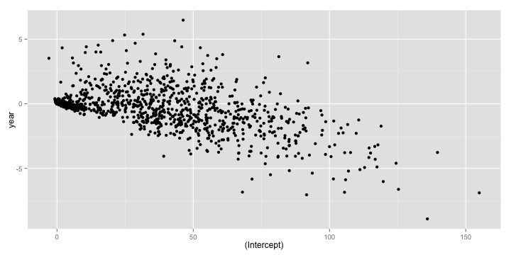

Split-Apply-Combine: II
Recall that the core idea behind the split-apply-combine strategy is to
- split up the original data (this can be any format includng data.frames, lists, arrays, matrics, vectors),
- apply existing or custom functions to it, and
- combine the results in the same or different format.
In this lesson, we will explore three R packages that make it easy to apply this strategy using a simple, unified interface
plyr
The first package we will take a look at is the plyr package by Hadley Wickham. The basic philosophy of plyr is that to carry out any split-apply-combine operation, a user only needs to specify the following details
- The data structure of the input.
- The dataset being worked on
- The variable to split the dataset on.
- The function to applyto each split piece.
- The data structure of the output to combine pieces.
Accordingly, plyr synthesizes the entire *apply family into one consistent matrix of functions, a really useful toolkit!

Let us revisit our earlier problem of figuring out the most popular name by sex between the years 2000 and 2008. We are passing a data frame in and want to get a data frame out. So we pick the ddply function, where the first d stands for data frame input, and the second d stands for data frame output.
The rest of the arguments look eerily similar to what we used in the aggregate function call, as should be, since these are the primitives in terms of which we can specify this data analysis problem.
library(plyr)
result <- ddply(
.data = subset(bnames2_b, year >= 2000),
.variables = c('sex', 'name'),
.fun = function(p){
summarize(p, tot = sum(tot))
}
)
The plyr package offers a lot of syntactic sugar that allows one to write really concise code. For example, the previous piece of code can be rewritten as
resultB <- ddply(subset(bnames2_b, year >= 2000),
.(sex, name), summarize, tot = sum(tot)
)
It works by passing the argument tot = sum(tot) to the summarize function, thereby allowing one to skip defining a separate anonymous function.
In addition to syntactic sugar, the plyr package provides some nice bells and whistles to run your analysis in parallel (you will need to have the foreach package installed) and also display a progress bar. Type ?ddply to explore more options from the documentation.
Let us consider another interesting problem, this time from the baseball dataset. Suppose, we want to run a linear regression of rbi (runs batted in) across a player's carrer in terms of years.
head(baseball[,1:16])
## id year stint team lg g ab r h X2b X3b hr rbi sb cs bb
## 4 ansonca01 1871 1 RC1 25 120 29 39 11 3 0 16 6 2 2
## 44 forceda01 1871 1 WS3 32 162 45 45 9 4 0 29 8 0 4
## 68 mathebo01 1871 1 FW1 19 89 15 24 3 1 0 10 2 1 2
## 99 startjo01 1871 1 NY2 33 161 35 58 5 1 1 34 4 2 3
## 102 suttoez01 1871 1 CL1 29 128 35 45 3 7 3 23 3 1 1
## 106 whitede01 1871 1 CL1 29 146 40 47 6 5 1 21 2 2 4
Let us start by writing a simple function that would take a data frame consisting of a subset for a specific player and then return the regression model.
rbi_vs_year <- function(df){
df <- mutate(df, year = year - min(year))
lm(rbi ~ year, data = df)
}
Note that since the model objects are not data frames, it is appropriate to return a list as output. So, we use the dlply function.
models <- dlply(baseball, .(id), rbi_vs_year)
models[[1]]
##
## Call:
## lm(formula = rbi ~ year, data = df)
##
## Coefficients:
## (Intercept) year
## 118.92 -1.73
We can extract the regression coefficients for each model object, using the coef function. So
coef(models[[1]])
## (Intercept) year
## 118.924 -1.732
What if we wanted a data.frame of coefficients? Once again the key is to note that we start with a list of model objects and want an dataframe as output.
coefs <- ldply(models, coef)
qplot(`(Intercept)`, year, data = coefs)

The plyr package is very feature rich and I would encourage you to explore more of it. The one flip side to using plyr is that it can be very slow on large data sets. In such situations, you have the option of using two other R packages dplyr, the anointed successor of plyr and data.table.
dplyr
The dplyr package is a next generation implementation of plyr. According to the author Hadley Wickham,
dplyr is a new package which provides a set of tools for efficiently manipulating datasets in R. dplyr is the next iteration of plyr, focussing on only data frames. dplyr is faster, has a more consistent API.
Some of the nice features of dplyr are:
- Speed: All underlying manipulations are carried out in C++ using
Rcpp. - Consistentcy: All tabular data is treated similarly allowing one to work with
data framesanddatabasesin very much the same way. - Simplicity
Let us take an example involving the Batting dataset from the Lahman package. We are interested in computing the total number of games played by a player, arranged in decreasing order of totals.
In plyr, we would write the following code
games <- ddply(Batting, .(playerID), summarize, total = sum(G))
head(arrange(games, desc(total)), 5)
## playerID total
## 1 rosepe01 3562
## 2 yastrca01 3308
## 3 aaronha01 3298
## 4 henderi01 3081
## 5 cobbty01 3035
The same piece of code can be rewritten in dplyr, using its version of the chain operator, %.%:
library(dplyr)
games_d <- Batting %.%
group_by(playerID) %.%
summarize(total = sum(G)) %.%
arrange(desc(total)) %.%
head(5)
This should be a natural way of writing code for those of you familiar with pandas.
If you ran both pieces of code, you will notice that dplyr is significantly faster than plyr.
data.table
library(data.table)
Batting_DT <- data.table(Batting)
games_dt <- Batting_DT[,
list(total = sum(G)),
"playerID"
][
head(order(-total), 5),
]